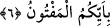

Âyette yer alan “meftûn” kelimesi fütûn mânâsına gelmektedir. Fütûn ise Arapçada
cünûn yâni delilik demektir. Bu tıpkı meclûd kelimesinin celâdet, mâkûl kelimesinin
akıl mânâsına geldiği gibidir. Nitekim mâkûl kelimesi şu ifâdede akıl anlamına
kullanılmıştır “Nihâyet onlar onun kemiğinde et, kalbinde de mâkûl bırakmadılar.”[39]
Âyette yer alan “ba” harfi,”bihî dâun” yâni onda hastalık vardır cümlesinde olduğu gibi
“ilsak”/bitişmek anlamınadır.
6. Hanginizde delilik olduğunu.
Âyet-i kerîmeyi “hanginizde delilik olduğunu” şeklinde anlamak mümkün olduğu
gibi, “iki zümreden hangisinde; müminler zümresinde mi yoksa kâfirler topluluğunda mı
delilik olduğunu yakında bileceksiniz” şeklinde tefsir etmek de mümkündür. Bir başka
ifâdeyle “bu isme lâyık olacak sıfatın hanginizde bulunduğunu yakında bileceksiniz”
denmiş olmaktadır. Bu takdirde âyetteki “ba” harfi “fi” anlamına olmuş olur. Âyetin
hitâbına Peygamberimiz (s.a.)’in bütün ümmeti dâhildir. Şu hâlde “bunu sâdece
Peygamber (s.a.) görmeyecek, sizler de peygambere tâbi olarak kimde delilik olduğunu
göreceksiniz” denmiş olmaktadır. İfâde bu hâliyle Ebû Cehil b. Hişam’a, Velid b.
Muğire’ye ve benzerlerine bir ta’riz niteliğindedir. Bu ifâde bu hâliyle tıpkı şu âyet-i
kerîmeye benzemektedir: “Yarın onlar, yalancı ve şımarığın kim olduğunu
bileceklerdir.” (el-Kamer, 54/26) Yâni, yarın onlar, Hz. Sâlih (a.s.)’ın mı yoksa
kavminin mi yalancı ve şımarık olduğunu bileceklerdir.
[21]. Tirmizi, Fedailu’l-Kuran 16.
[22]. Bkz. İmam Leknevî, el-Âsâru’l-merfûa, s.43.
[23]. Acluni, I, 312.
[24]. Bk. İbn Sad, I, 194-196.
[25]. Ebû Davud, Tıb 12; Darimi, Rüya 12; Ahmed b. Hanbel, el-Müsned, I, 368; IV,
66; V, 58, 378.
[26]. Müslim, Hac, 425.
[27]. Tirmizi, Menakıb 16; Darimi, Zekat 26.
[28]. Ebû Davud, Edeb 16; Tirmizi, Zühd 45; Ahmed b. Hanbel, el-Müsned, II, 303,
334
[29]. Bk. Münavi, VI, 389.
[30]. Ahmed b. Hanbel, Müsmed, 24645.
[31]. Bk. Münavi, II, 482.